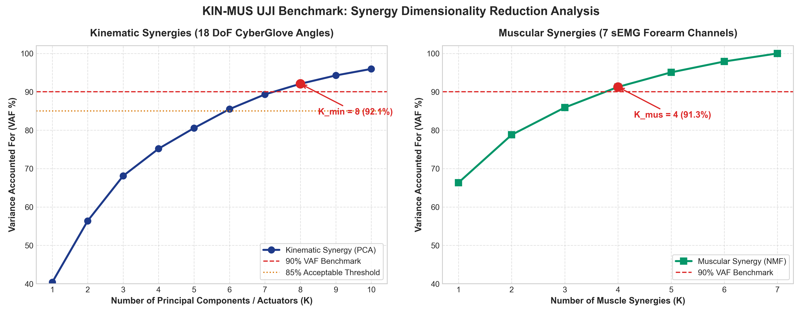
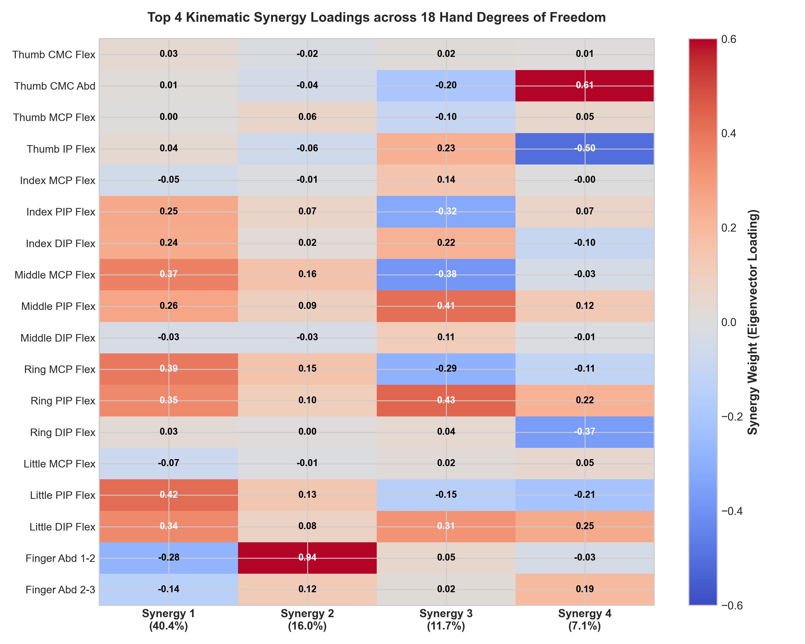
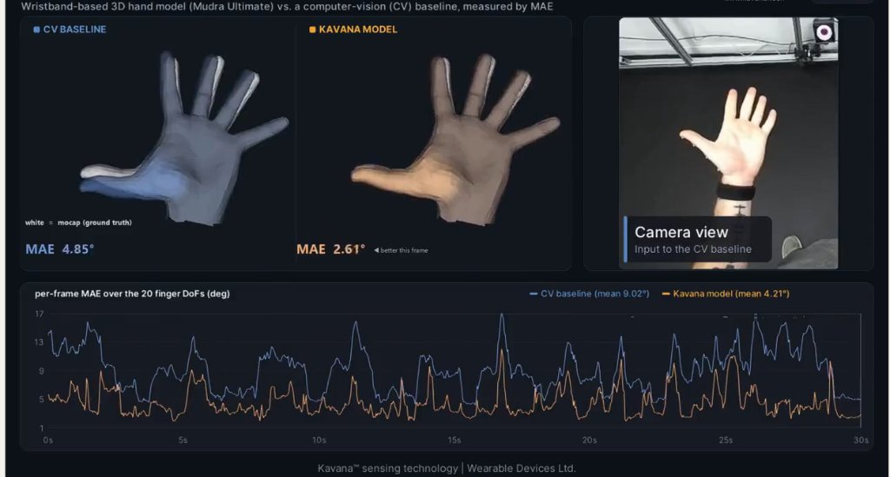
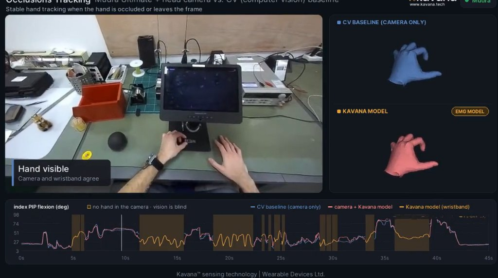
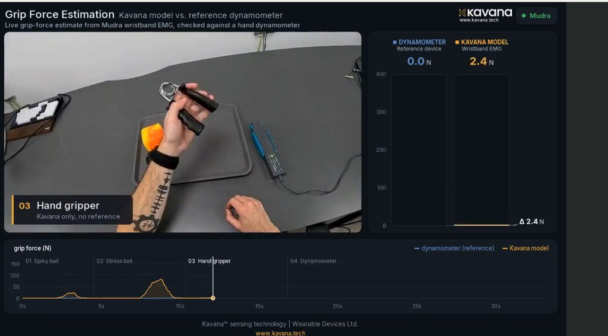

قبضة اليد (Grip Clench):
48%
الجسم:
المشغلات (K):
60-FPS Neural-Mechanical Twin • KIN-MUS UJI + Ninapro DB2 + Encord EMG-1 • Ain Shams University
English Title
المؤلفون والمجلة
| المكون / الحساس | الموديل والتوصيف الهندسي | الدور الوظيفي |
|---|





| # | المرجع والمجلة | المنظومة والقياسات | المحركات والاختزال | الخوارزمية | النتائج المحققة | الدور في رسالة الماجستير |
|---|